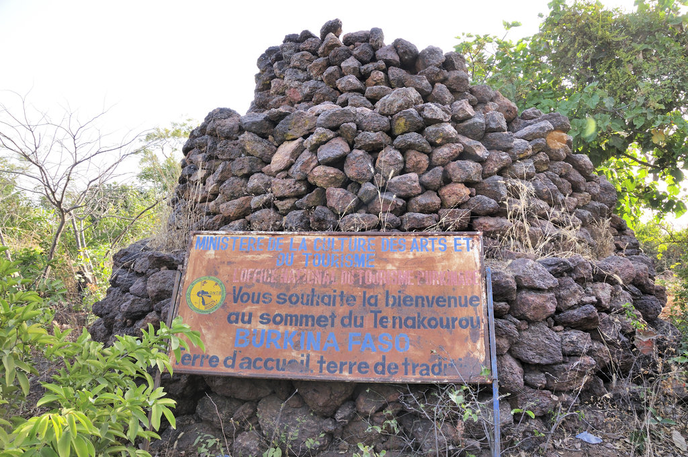

Le Mont Tenakourou est le point culminant du Burkina Faso, avec une altitude d'environ 747 mètres. Il est situé dans la région des Cascades, près de la frontière avec le Mali, dans la province de la Kénédougou.
Description du site
Ce sommet est caractérisé par un relief modéré composé de collines rocheuses et couvertes d'une végétation typique de savane. Le site offre une vue panoramique exceptionnelle sur les paysages environnants, incluant des forêts, des plaines agricoles et des petits villages traditionnels.
Le Mont Tenakourou est accessible par des sentiers de randonnée balisés, appréciés des amateurs de trekking et de nature. Son sommet est marqué par une stèle et une table d'orientation qui indiquent les différents points visibles depuis ce point de vue.
Historique

Le Mont Tenakourou tient une place symbolique pour les populations locales, représentant la "toit" naturel du pays. Il a été longtemps un repère géographique et spirituel dans la région. Le nom "Tenakourou" signifie "sommet de la terre" en langue locale, soulignant son importance géographique et culturelle.
Le site attire chaque année de nombreux visiteurs, nationaux et étrangers, qui viennent découvrir ce lieu naturel unique et profiter de son cadre paisible.